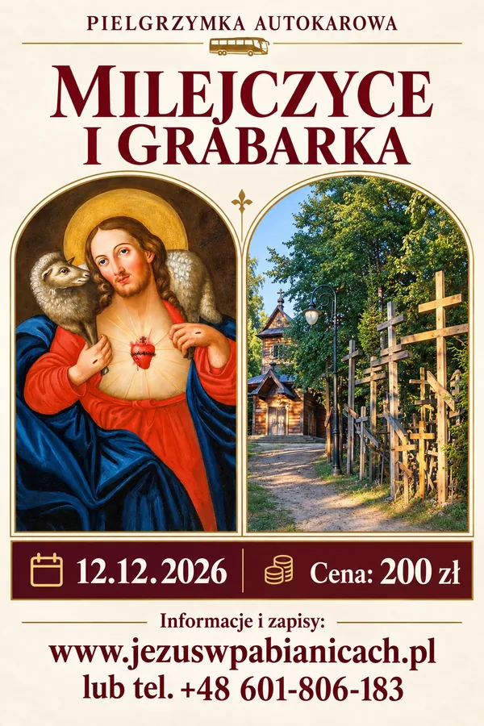
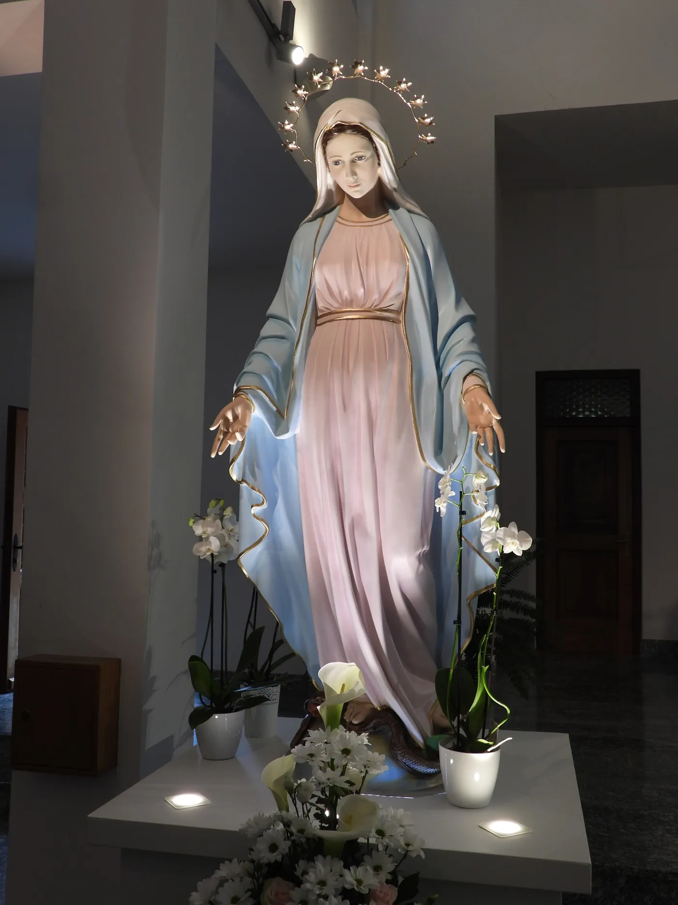
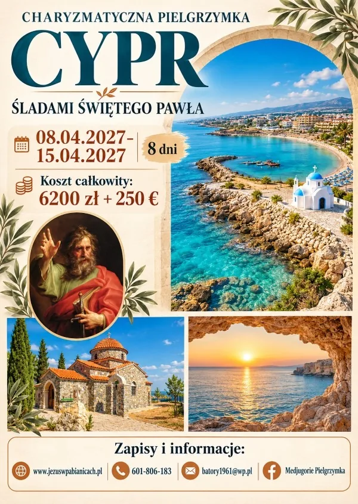
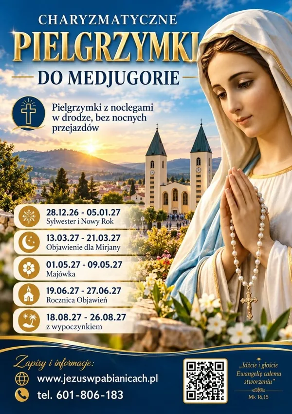
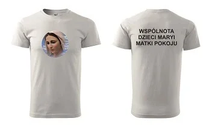

12.12.2026 · 1 dzień
Milejczyce i Grabarka
Obraz Najświętszego Serca Pana Jezusa z motywem Dobrego Pasterza, Msza Święta o 11.00, potem Święta Góra Grabarka i jej krzyże.
200 zł z gorącym posiłkiem
Szczegóły i zapisy
Jedziemy autokarem, z noclegami w drodze. Codziennie Msza Święta, modlitwa o uzdrowienie i dużo radości, śpiewu i uwielbienia.
Najbliżej: Sylwester i Nowy Rok w Medjugorie, 28.12.2026 - 05.01.2027
Cztery wyjazdy z otwartymi zapisami. Przy każdym program, cena, miejsca wsiadania i formularz.

12.12.2026 · 1 dzień
Obraz Najświętszego Serca Pana Jezusa z motywem Dobrego Pasterza, Msza Święta o 11.00, potem Święta Góra Grabarka i jej krzyże.
200 zł z gorącym posiłkiem
Szczegóły i zapisy28.12.2026 - 05.01.2027 · 9 dni
Sylwestrowa uczta duchowa w kościele św. Jakuba, a potem zabawa w pensjonacie. Noclegi w drodze w Chorwacji.
2500 zł zaliczka 1350 zł
Szczegóły i zapisy13.03 - 21.03.2027 · 9 dni
18 marca, w urodziny Mirjany, Matka Boża przychodzi do niej ze specjalnym przesłaniem. Jesteśmy wtedy na miejscu.
2500 zł zaliczka 1250 zł
Szczegóły i zapisy
08.04 - 15.04.2027 · 8 dni
Przelot PLL LOT z Warszawy. Pafos z kolumną św. Pawła, Nikozja, Kurion, klasztor Kykkos, Famagusta i Salamina.
6200 zł + 250 euro na miejscu
Szczegóły i zapisy1 / 4

Pytania o te terminy: 601 806 183.
Dziewięć dni: dzień drogi z noclegiem w Chorwacji, siedem dni w Medjugorie i powrót przez chorwackie Lourdes i Makarską. Prowadzimy formację charyzmatyczną i medytacyjną, opartą na Rekolekcjach Ignacjańskich.
Pokój 1-osobowy w Medjugorie: dopłata 800 zł. Weź gitarę, jeśli grasz, i daj nam znać przy zapisie.
Drogie dzieci! Radujcie się razem ze mną, bo Najwyższy pozwolił mi być z wami, abym prowadziła was do Niego, który jest Drogą, Prawdą i Życiem.
Przykład: pielgrzymka marcowa, sobota 13.03.2027. Wysiadamy w tych samych miejscach.
Sprawdź ważność dowodu lub paszportu. Dowód zgłoszony jako zaginiony traci ważność na zawsze, nawet gdy się znajdzie.

Biuro Pielgrzymkowe DZIECI MARYI
Urszula Nowak
ul. Zaradzyńska 9 B, 95-200 Pabianice
NIP 731-180-87-13 · REGON 472339193
Wpis do Centralnej Ewidencji Organizatorów Turystyki nr 42830